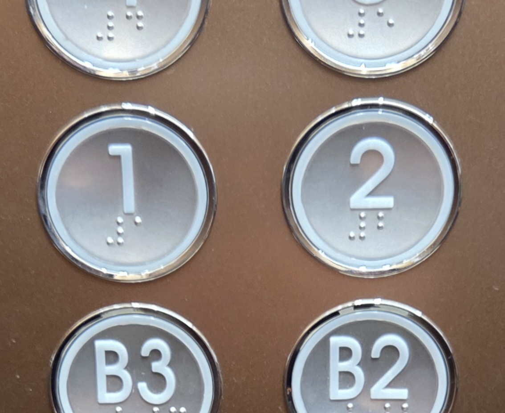
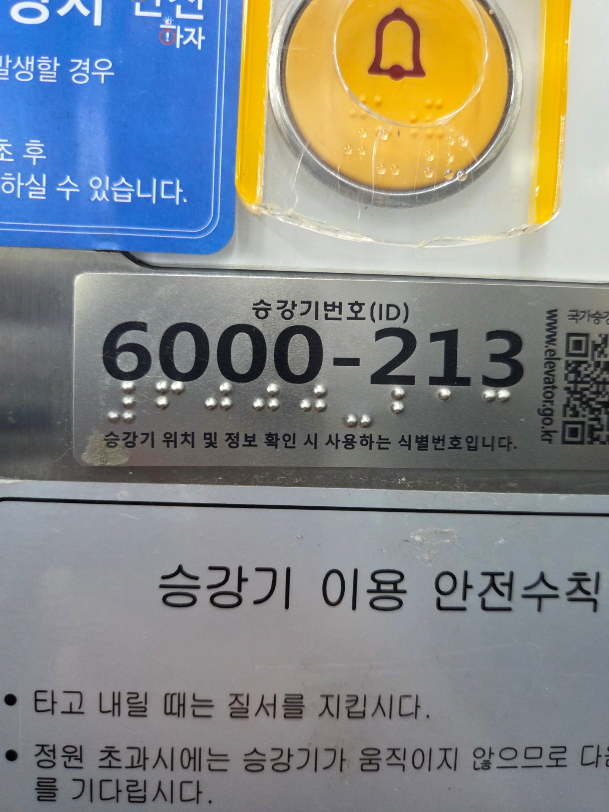
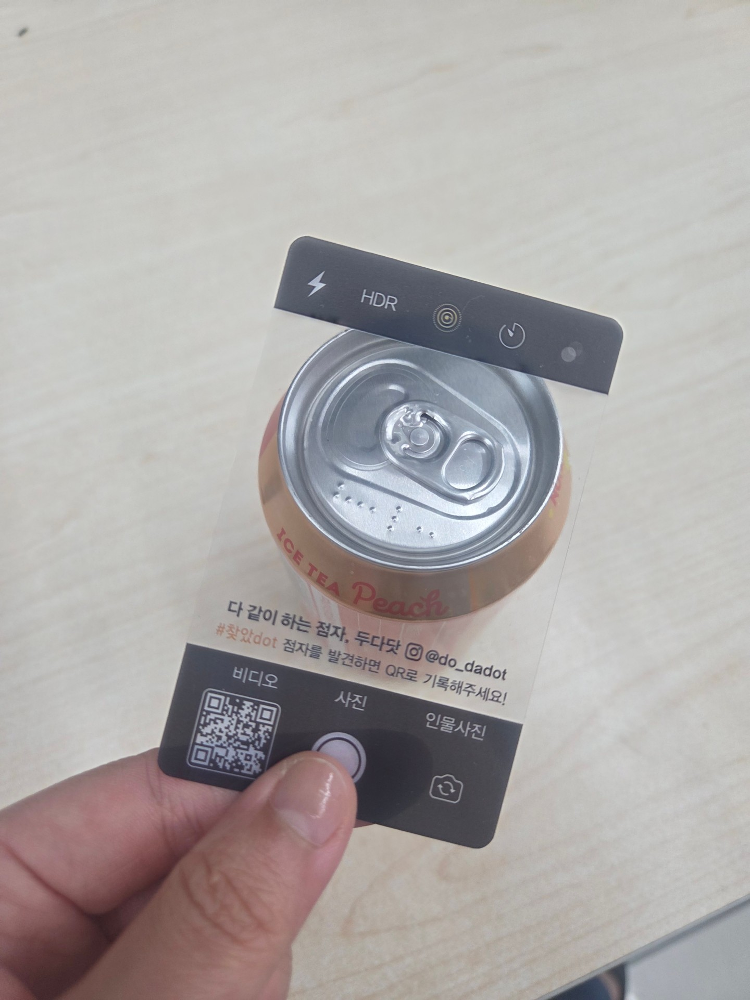
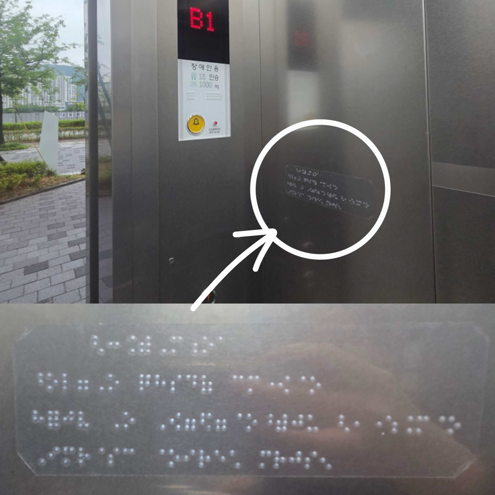

지하철역 자판기에서 발견한 점자
⠋⠙⠍⠰⠕⠉⠥
⠼⠋⠚⠚
점역 내용: 카푸치노 600
판매 물품은 '오리지널 800원'이지만, 점자로는 '카푸치노 600원'으로 잘못된 정보가 제공되고 있어요.
여러 사람이 발견한 점자의 위치와 이야기를 모아두는 공간입니다. 네이버폼으로 제출된 사진들 중 두다닷에서 확인한 뒤 일부를 선별해 게시합니다.
나도 점자 기록하기전체 0개 기록
점역 내용: 카푸치노 600
판매 물품은 '오리지널 800원'이지만, 점자로는 '카푸치노 600원'으로 잘못된 정보가 제공되고 있어요.

점역 내용: 1 / 2
엘리베이터 버튼 속 점자의 숫자는 항상 같은 점형(⠼)으로 시작해요.

점역 내용: 6000-bac
수표가 들어가지 않으면 123이 아니라 영어 abc로 읽혀요.

점역 내용: 탄산
점자만으론 '어떤' 탄산 음료인지 알 수 없어요.

점역 내용: 호출
점자가 있어 역무원을 부르는 버튼임을 알수 있어요.

점역 내용: 어얼이워
영어로 STOP 이지만, 영어 시작 표시(로마자시작표)가 없어 한글로 읽힐 수 있어요.

점역 내용: 정지
버튼 위 '정지'가 적혀 있어 어떤 상황에 쓰는지 알 수 있어요.

점역 내용: 믈알의-
내려감(⠉⠗⠐⠱⠫⠢) 표기가 뒤집혀 붙여있어요.

점역 내용: 안전규칙 / 비상시 인터폰 누르기 / 통화 시 승강기번호 알려주기 / 뛰거나 기대면 위험
엘리베이터 탑승 시 안전 규칙이 점자로 적혀 있어요.

점역 내용: 1 / b1 / 개 / 폐
대문자표가 없어서 점자로는 b1로 적혀있어요. 열림 버튼은 '개(開)', 닫힘 버튼은 '폐(閉)'라고 표시해요.

점역 내용: 호얹(호?)
초성 ㅊ의 빈칸을 띄우지 않아, 점형이 밀려 잘못된 점자 표기가 됐어요. 점자를 적을 땐 정해진 간격을 맞춰야 해요.